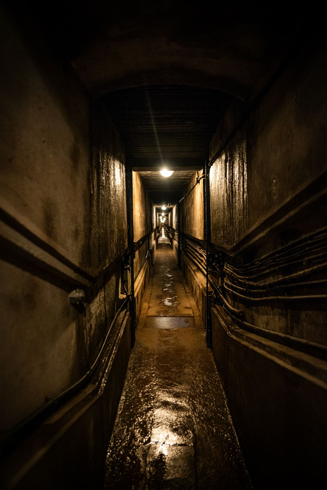

You chose to dig deeper into this matter, after some exploring you find a secret wooden door etched in the floor,
you open it and found a staircase to the deepest level of the Manor, as you move deeper and deeper, the sound of footsteps keep getting louder and louder aswell as a new faint sound keeps ringing in the atmosphere calling out for help,
Now you also hear footsteps from above...
Are you hallucinating?